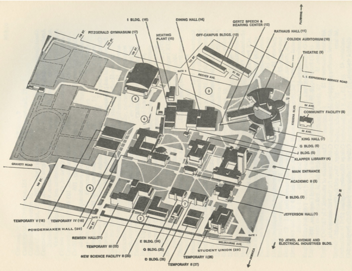

- 1 • Jefferson Hall
- — Administrative Offices
- — Registrar’s Office
- — Admissions Office
- — Business Office
- — Personnel Office
- — Foreign Students Office
- — Reprographic Services
- 2 • B Building
- — Graduate Biology Laboratories
- 3 • Academic II
- — Administrative Offices
- — Word Processing Center
- — Editorial Services
- — Development Office
- — Public Relations
- — Data Processing Offices
- — School of General Studies
- — Adult Collegiate Education (ACE) Program
- — Continuing Education Programs
- — English Language Institute
- — Academic Skills Center
- — Art, Classical and Oriental Languages
- — Comparative Literature
- — German and Scandinavian
- — Mathematics
- — Romance Languages
- — Slavic and East European Languages and Literatures
- — Economics Offices
- — East Asian Studies
- — Jewish Studies
- — Irish Studies
- — Special Studies and Honors
- — Contemporary Civilization
- 4 • Klapper Library
- 5 • J Building
- 6 • G Building
- — Computer Science
- — Humanities Program
- 7 • King Hall
- — Department of Drama and Theatre
- — Television and Sound Laboratory
- — Puerto Rican Studies
- 8 • Community Facility
- — Bookstore
- — Communication Arts and Sciences
- — Library Science
- — Linguistics
- 9 • Theatre
- 10 • Colden Auditorium
- 11 • Rathaus Hall
- 12 • Gertz Speech and Hearing Center
- 13 • Off-Campus Buildings
- — Africana Studies
- — Archaeology
- — Byzantine Studies
- — SEEK
- — OZ
- — RAP
- — Center for Human Relations
- — Institute for Community Studies
- — Latin American Area Studies
- — Upward Bound
- — Health and Physical Education Offices
- 14 • Dining Hall
- — Mailroom
- — Central Receiving
- 15 • Heating Plant
- 16 • I Building
- 17 • FitzGerald Gymnasium
- — Department of Health and Physical Education
- — Health Service Center
- 18 • Temporary V
- — Department of Sociology
- — SEEK Offices
- — Student Lounges
- 19 • Temporary V
- — Classrooms
- — Lecture Rooms
- 20 • Powdermaker Hall
- — Education Clinic
- — Accounting
- — Anthropology
- — Economics
- — Education
- — History
- — Philosophy
- — Political Science
- — Student Personnel
- — Urban Studies
- — Office of the Dean of Students
- — Graduate Studies
- — Religious Studies
- — Grants Office
- — Educational Placement
- 21 • Remsen Hall
- — Administrative Offices
- — Chemistry
- — Earth and Environmental Sciences
- — Home Economics
- — Psychology
- 22 • Temporary III
- — SEEK Offices
- — Department of Special Programs
- — Psychology Office
- — Psychology Laboratories and Machine Shop
- — City University Mutual Benefit Instructional Network (CUMBIN)
- 23 • New Science Facility
- — Institute for Low Temperature Physics
- — Office of Space Management
- — English Office
- — Economics Office
- — Chemistry Office
- — Physics Office
- — Psychology Office
- 24 • E Building
- — Department of Biology
- — Biology Laboratories
- 25 • Q Building
- 26 • D Building
- 27 • Temporary II
- — Department of English
- — American Studies
- 28 • Temporary I
- — Offices
- — Computer Center
- 29 • Student Union
- — Student Services Corporation
- — Alumni Office
- — WQMC
- — Student Organization Offices
- — Restaurant
- — Snack Bar
- — Meeting/Conference Rooms
- — Lounges
- — Cultural and Recreational Facilities
- — Parking
- — Biology Offices
- — Earth and Environmental Sciences Offices
- — Home Economics Laboratories